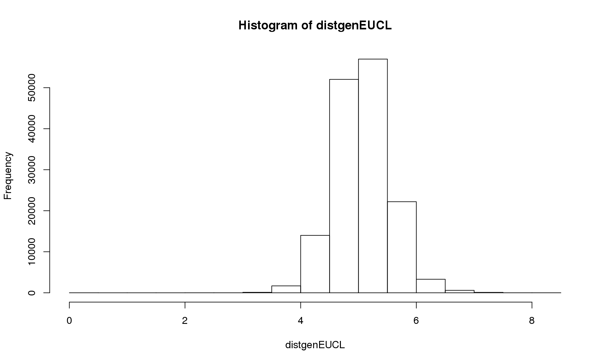
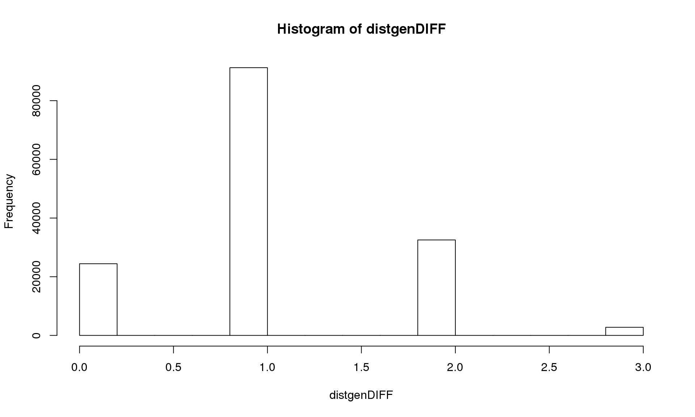
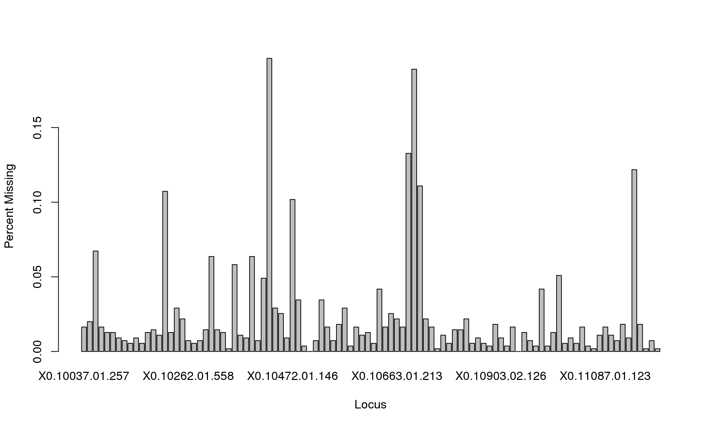
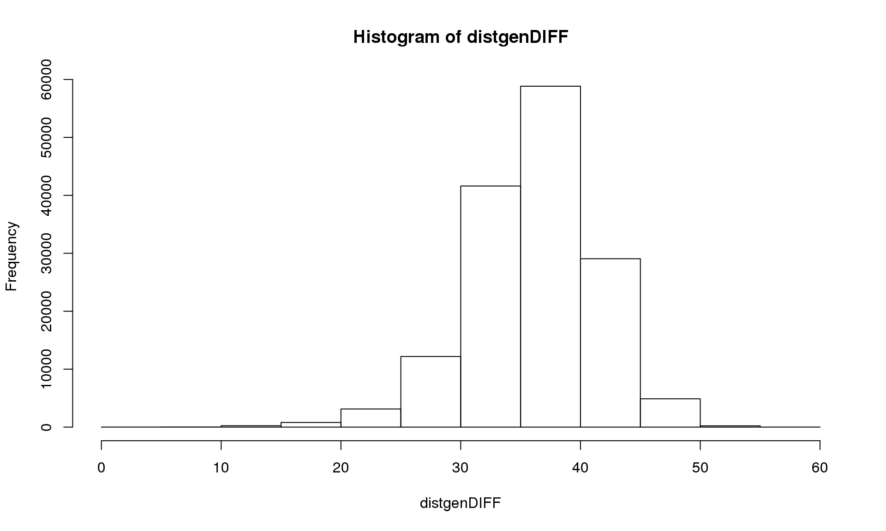
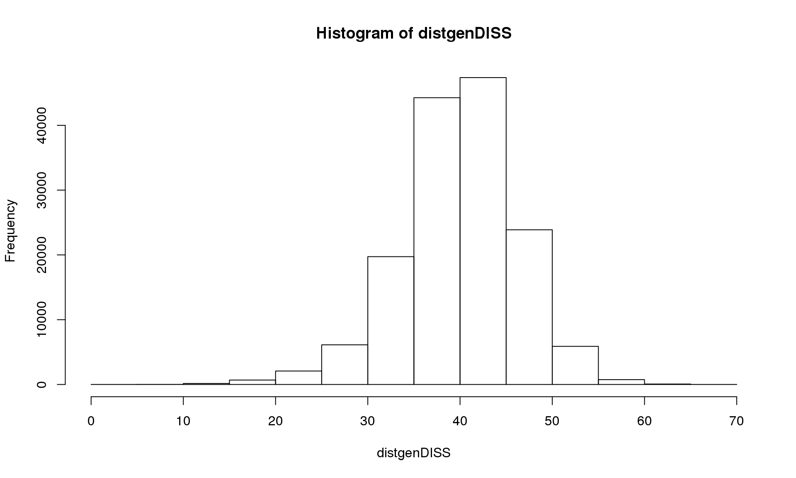
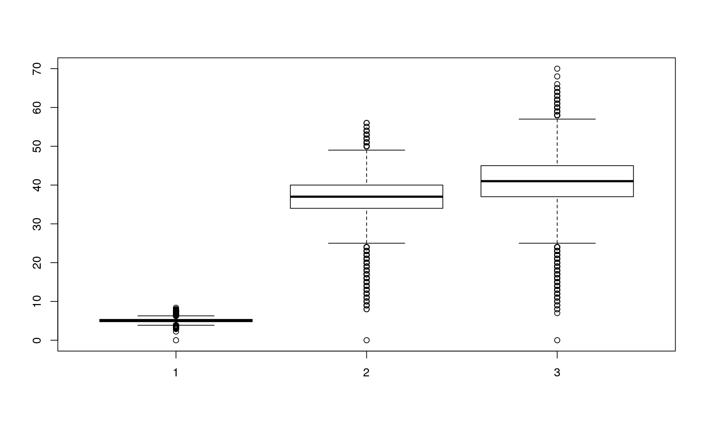

dist {adegenet})dist.gene {ape})diss.dist {poppr})In this vignette, we will estimate individual genetic distances from SNP data. It is useful when you have individual genotype data and you don’t know the populations.
We will use non evolutionary genetic distances, i.e. not based on Hardy-Weinberg assumptions: free from assumptions.
The dataset used for those analysis concerns the plant: lodgepole pine (Pinus contorta, Pinaceae). You can have more information on this data set and the species on the web site of A. Eckert: (http://eckertdata.blogspot.fr/). But here the dataset is used as a test dataset with no idea of interpreting the results in a biological way. We will work on a subset of the dataset to make the calculations faster.
The data are stored in a text file (genotype=AA). We will import the dataset in R as a data frame, and then convert the SNP data file into genind objects.
The dataset “Master_Pinus_data_genotype.txt” can be downloaded here.
The text file is a matrix of (550 rows x 3086 columns). It contains 4 extra columns: first column is the label of the individuals, the three other are description of the region, all the other columns are for the genotypes as (AA or AT…).
When you import the data into R, the data file needs to be in your working directory, or adjust the path in the read.table() invocation below accordingly.
Mydata <- read.table("Master_Pinus_data_genotype.txt", header = TRUE)
dim(Mydata) ## [1] 550 3086ind <- as.character(Mydata$tree_id) #individual labels
population <- as.character(Mydata$state) #population labels
county <- Mydata$county
dim(Mydata) #550 individuals x 3082 SNPs## [1] 550 3086Loading the required packages:
library(poppr)
library(pegas)
library(ape)
library(adegenet)
library(ade4)To work with the data, we need to convert the R object returned by read.table() to a genind object. To achieve this, we create a matrix with only genotypes, and keep only a subset of the first 100 SNP loci (to make calculations faster). The result can then be converted to a genind object (for the package adegenet). The genind object can then easily be converted into loci objects (package pegas) (i.e. Mydata2)
locus <- Mydata[, -c(1, 2, 3, 4, 105:ncol(Mydata))]
Mydata1 <- df2genind(locus, ploidy = 2, ind.names = ind, pop = population, sep="")
Mydata1## /// GENIND OBJECT /////////
##
## // 550 individuals; 100 loci; 200 alleles; size: 520.4 Kb
##
## // Basic content
## @tab: 550 x 200 matrix of allele counts
## @loc.n.all: number of alleles per locus (range: 2-2)
## @loc.fac: locus factor for the 200 columns of @tab
## @all.names: list of allele names for each locus
## @ploidy: ploidy of each individual (range: 2-2)
## @type: codom
## @call: df2genind(X = locus, sep = "", ind.names = ind, pop = population,
## ploidy = 2)
##
## // Optional content
## @pop: population of each individual (group size range: 4-177)Mydata2 <-genind2loci(Mydata1)dist {adegenet})The unit of the observation is the individuals.
The analysis is applied on allele frequency within individuals as represented in the genind object. We can use the function dist() from adegenet which provides different options. We will use the euclidean distance among vector of allele frequencies.
distgenEUCL <- dist(Mydata1, method = "euclidean", diag = FALSE, upper = FALSE, p = 2)
hist(distgenEUCL)
dist.gene {ape})The option pairwise.deletion = FALSE in the command distgen() removes all loci with one missing values : you an see on the histogram that we get a maximum distance of 3 loci out of 100.
We can see that we get 98 loci with at least one sample missing. Then using the option pairwise.deletion = TRUE in the command distgen() allows you to keep loci with one missing value.
distgenDIFF <- dist.gene(Mydata2, method="pairwise", pairwise.deletion=FALSE, variance=FALSE)
hist(distgenDIFF)
missing_data <- info_table(Mydata1, type = "missing")
sum(missing_data["Total", 1:100] > 0)## [1] 98barplot(missing_data["Total", 1:100], xlab = "Locus", ylab = "Percent Missing")
distgenDIFF <- dist.gene(Mydata2, method="pairwise", pairwise.deletion=TRUE, variance=FALSE)
hist(distgenDIFF)
diss.dist {poppr})distgenDISS <- diss.dist(Mydata1, percent=FALSE, mat=FALSE)
hist(distgenDISS)
boxplot(distgenEUCL, distgenDIFF, distgenDISS)
The number of allelic differences between two individuals is a different measure from euclidean distance or number of locus differences between two individuals.
In this vignette, we explore different measures of individual genetic distances. It is important to investigate the different options of each command. Missing data can be handled in different ways.
Other R packages can also be used to estimate individual genetic distances like gstudio for example. The individuals genetic distances can then be used in analysis as Mantel tests to test for isolation by distance or more complex analysis in landscape genetics to test for resistance by distance, cluster analysis, spatial network… See related vignettes.
This shows us useful information for reproducibility. Of particular importance are the versions of R and the packages used to create this workflow. It is considered good practice to record this information with every analysis.
options(width = 100)
devtools::session_info()## Session info ---------------------------------------------------------------------------------------## setting value
## version R version 3.2.3 RC (2015-12-03 r69731)
## system x86_64, linux-gnu
## ui X11
## language (EN)
## collate en_US.UTF-8
## tz <NA>
## date 2015-12-18## Packages -------------------------------------------------------------------------------------------## package * version date source
## ade4 * 1.7-3 2015-11-22 CRAN (R 3.2.3)
## adegenet * 2.0.0 2015-07-07 CRAN (R 3.2.3)
## ape * 3.4 2015-11-29 CRAN (R 3.2.3)
## assertthat 0.1 2013-12-06 CRAN (R 3.2.3)
## BiocGenerics 0.16.1 2015-12-16 Bioconductor
## Biostrings 2.38.2 2015-12-16 Bioconductor
## boot 1.3-17 2015-06-29 CRAN (R 3.2.1)
## cluster 2.0.3 2015-07-21 CRAN (R 3.2.1)
## coda 0.18-1 2015-10-16 CRAN (R 3.2.3)
## colorspace 1.2-6 2015-03-11 CRAN (R 3.2.3)
## DBI 0.3.1 2014-09-24 CRAN (R 3.2.3)
## deldir 0.1-9 2015-03-09 CRAN (R 3.2.3)
## devtools 1.9.1 2015-09-11 CRAN (R 3.2.3)
## digest 0.6.8 2014-12-31 CRAN (R 3.2.3)
## dplyr 0.4.3 2015-09-01 CRAN (R 3.2.3)
## evaluate 0.8 2015-09-18 CRAN (R 3.2.3)
## formatR 1.2.1 2015-09-18 CRAN (R 3.2.3)
## ggplot2 1.0.1 2015-03-17 CRAN (R 3.2.3)
## gtable 0.1.2 2012-12-05 CRAN (R 3.2.3)
## htmltools 0.2.6 2014-09-08 CRAN (R 3.2.3)
## httpuv 1.3.3 2015-08-04 CRAN (R 3.2.3)
## igraph 1.0.1 2015-06-26 CRAN (R 3.2.3)
## IRanges 2.4.6 2015-12-16 Bioconductor
## knitr 1.11 2015-08-14 CRAN (R 3.2.3)
## lattice 0.20-33 2015-07-14 CRAN (R 3.2.3)
## LearnBayes 2.15 2014-05-29 CRAN (R 3.2.3)
## magrittr 1.5 2014-11-22 CRAN (R 3.2.3)
## MASS 7.3-45 2015-11-10 CRAN (R 3.2.3)
## Matrix 1.2-3 2015-11-28 CRAN (R 3.2.2)
## memoise 0.2.1 2014-04-22 CRAN (R 3.2.3)
## mgcv 1.8-10 2015-12-12 CRAN (R 3.2.3)
## mime 0.4 2015-09-03 CRAN (R 3.2.3)
## munsell 0.4.2 2013-07-11 CRAN (R 3.2.3)
## nlme 3.1-122 2015-08-19 CRAN (R 3.2.3)
## nnls 1.4 2012-03-19 CRAN (R 3.2.3)
## pegas * 0.8-2 2015-09-25 CRAN (R 3.2.3)
## permute 0.8-4 2015-05-19 CRAN (R 3.2.3)
## phangorn 2.0.1 2015-12-15 CRAN (R 3.2.3)
## plyr 1.8.3 2015-06-12 CRAN (R 3.2.3)
## poppr * 2.1.0 2015-12-01 CRAN (R 3.2.3)
## proto 0.3-10 2012-12-22 CRAN (R 3.2.3)
## quadprog 1.5-5 2013-04-17 CRAN (R 3.2.3)
## R6 2.1.1 2015-08-19 CRAN (R 3.2.3)
## Rcpp 0.12.2 2015-11-15 CRAN (R 3.2.3)
## reshape2 1.4.1 2014-12-06 CRAN (R 3.2.3)
## rmarkdown 0.8.1 2015-10-10 CRAN (R 3.2.3)
## S4Vectors 0.8.5 2015-12-16 Bioconductor
## scales 0.3.0 2015-08-25 CRAN (R 3.2.3)
## seqinr 3.1-3 2014-12-17 CRAN (R 3.2.3)
## shiny 0.12.2 2015-08-05 CRAN (R 3.2.3)
## sp 1.2-1 2015-10-18 CRAN (R 3.2.3)
## spdep 0.5-88 2015-03-17 CRAN (R 3.2.3)
## stringi 1.0-1 2015-10-22 CRAN (R 3.2.3)
## stringr 1.0.0 2015-04-30 CRAN (R 3.2.3)
## vegan 2.3-2 2015-11-19 CRAN (R 3.2.3)
## xtable 1.8-0 2015-11-02 CRAN (R 3.2.3)
## XVector 0.10.0 2015-12-16 Bioconductor
## yaml 2.1.13 2014-06-12 CRAN (R 3.2.3)
## zlibbioc 1.16.0 2015-12-16 Bioconductor